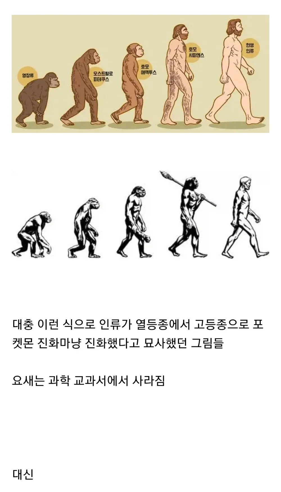
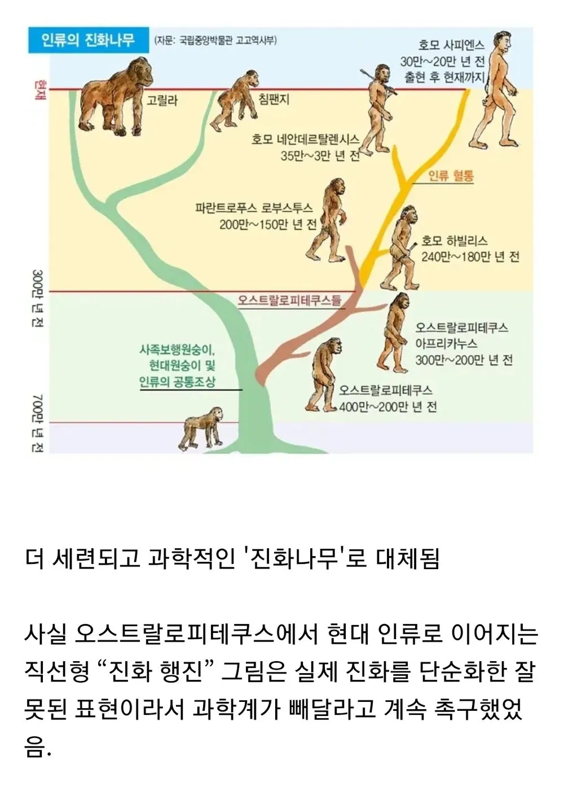

고릴라랑 침팬지랑 공통조상이구나....
근데 호모 사피엔스랑 현생인류는 같은거 아니었어?
호모 사피엔스 사피엔스를 표현한듯
현생인류의 학명이 호모 사피엔스니깐.. 저 둘을 나눈 것부터가 엉터리네
종 밑에도 아종이 있으니까...인류학이나 종분류란게 딱 떨어지는 게 아님.
시기에 따라 학자에 따라 조금씩 달라지기도 하고 예를 들면 네안데르탈의 분류가 책마다 다를 수 있는데, 요샌 Homo neanderthalensis와 Homo sapiens를 두개의 종으로 분류한 걸 많이 보는데 예전엔 네안데르탈인을 Homo sapiens neanderthalensis, 현생인류를 Homo sapiens sapiens로 둘 다 homo sapiens종의 두개의 다른 아종으로 분류한 것도 봄.
더 원론적으로 들어가면 옛날엔 종을 나눌 때 번식해서 계속 번식가능한 후손이 나오면 같은 종이라고 보았는데...이게 그렇게 단순하게 칼같이 나뉘는게 아니라서
현생 인류는 사피엔스+네안데르탈레인 혼혈로 추정되는게 가장 신빙성 있다고 함
네안데르탈이 더 근력이 발달하고 털이 많았다고 하는데 이 특징을 가지는 사람들이 꽤나 있는거 보면
근데 이거 아마 사하라 이남에 순수 사피엔스들이 많은데도 같은 사피엔스로 퉁친거라 좀 애매할걸?
진짜 조상의 조상의 조상의 조상의 어쩌구가 저 나무에서 잘못 테크 탔으면 지금 우호우호 하고 있었을거 생각하니까 참 우리는 운이 좋아
아버지들의 아버지
진화나무 위에꺼는 뭐라고 부름? 인류의 진화표?
아 진보의 행진 ㅋㅋ
진화 플로우차트
진화 도감
진즉에 저렇게 바꼈어야
"원숭이가 진화해서 인간이 됐다는 걸 믿어?" 란 말을 창조론자들이 안 했을텐데
진화의 개념이 디지몬이나 포켓몬 같은 거에 고정되어있으니
창조론자들은 공통조상이란 개념이 없음
나와 삼촌의 공통조상인 할아버지가 있는거임
그게 내가 삼촌의 자식이라는 뜻은 아닌거
이렇게 설명해주면 될것같지만 안먹힌다
???: 그럼 할아버지가 원숭이라는 뜻인가요?
전자의 방식이 인식 난이도가 쉬워서 그럼
??? : 우린 모두 근친충이구나!
시저!
'진화를 통해 열등한것이 우월해진다'
저것땜 이런 잘못된 통념이 생긴듯
신이 선택한 혈통! 만물의 영장!!
와 바뀐그림 좋다
개독땜에 없어졌다는줄
난 또 발가벗고 있어서 삭제되었는줄
기독교가 자꾸 침팬치가 인간이 됐다고 잘못이해해서 ㅋㅋ
아아... 인류의 조상은 거대한 푸시가 아니었던건가...
이래도 이해 못하고 우기는 사람들이...
위에 그림땜에 오해나 잘못 알게된 경우가 많았는데 이제 좀 나아질려나
저 나무대로면 유인원의 올바른 직계조상은 고릴라고 인류는 걍 변종 같잖아 색깔을 왜 저렇게 해놨대
우리 정도면 변종이라고 해도 괜찮을거같아
굿
결국 인류도 최초엔 원숭이였는데 현재 원숭이들과 다른 어떤 진화가 촉구되어서 저렇게 갈리게 된걸까
이 녀석 완전 호모잖아
기독교도 이제 이집트신화나 그리스로마신화처럼 사라질려나
사실상 지금 전세계에서 가장 메이저한게 기독교라 그건 무린듯.. 인류 문명 자체가 리셋되면 몰라도..
반지의제왕을 뛰어넘는 세계최고 판타지가 그럴리가
고릴라가 진화해서 침팬지가 되고, 침팬지가 진화하면 사람이 되는거구나!
대체 그 많고 많은 동물 중 인간만 말을 하고 걷는 건데
사실상 돌연변이들이 계속 나와서 그게 생존에 유리하니깐 점점 진화한것처럼 보이는거라며
??? : 원숭이 피를 사람이 어쩌고! 창조론!!!!!!